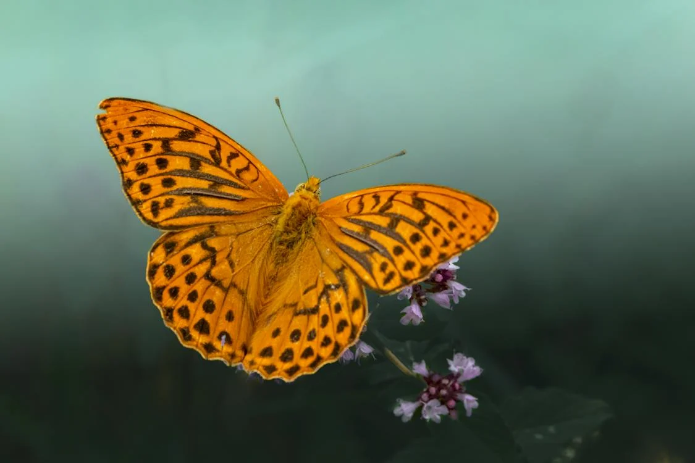
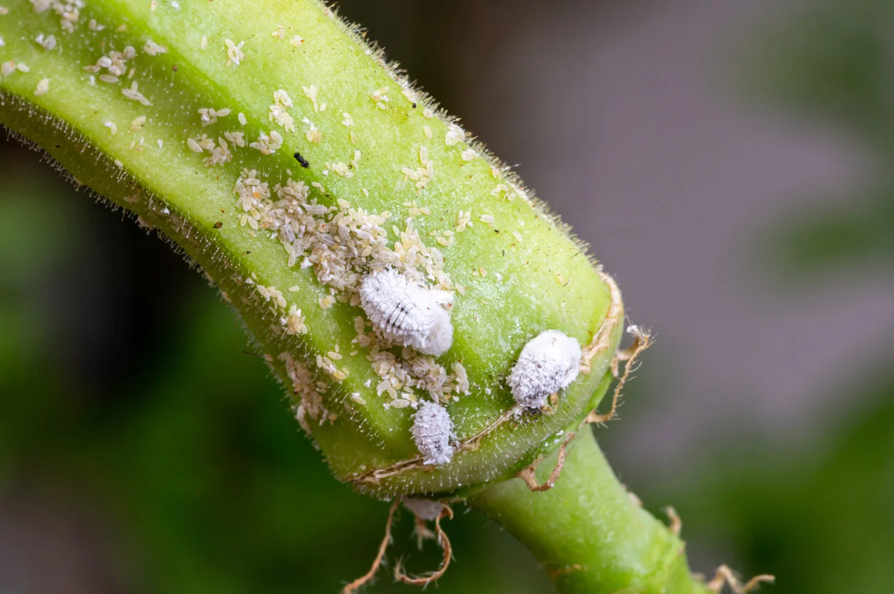
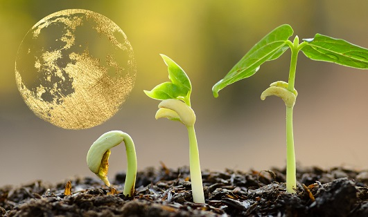
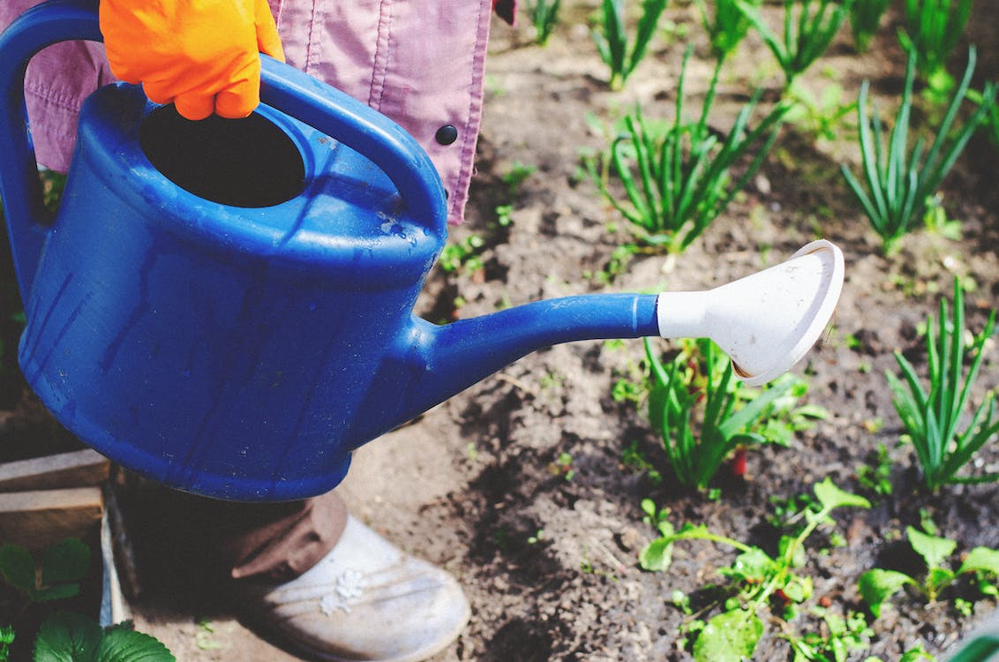

ENDULZA TÚ VIDA, ATRAE POLINIZADORES

Por: Johanna Bernal
Fecja: 12 de Febrero del 2024
Los polinizadores varían según lo que buscan en los jardines; por lo tanto, usted puede considerar las preferencias y necesidades de estas especies al decidir las plantas que usted va a sembrar. Por ejemplo, las abejas necesitan polen y néctar mientras que los colibríes y las mariposas solo necesitan néctar; pero eso no impide que contribuyan a transferir el polen cuando se alimentan.
Los polinizadores también tienen preferencias en cuanto a la forma y el color de las flores. Las abejas prefieren las flores blancas, amarillas y azules; las aves prefieren el tono rojo, anaranjado y blanco; y los colores llamativos y brillantes, incluyendo el rojo, amar...
Leer más...
5 comentarios
REMEDIO NATURAL PARA COMBATIR LA COCHINILLA DE LOS PLANTAS

Por: Maria Paula Franco
Fecha: 12 de Abril del 2023
Las cochinillas (o escamas) son insectos inmóviles que chupan los jugos de las plantas de muchos tipos de árboles, arbustos y plantas de interior. Las infestaciones de estos insectos pueden causar amarillamiento o caída prematura de las hojas, melaza pegajosa y moho negro de hollín. Las partes de la planta pueden distorsionarse o morir, dependiendo de la especie y la abundancia de las cochinillas. El manejo incluye el cuidado adecuado de las plantas, la conservación de los enemigos naturales y la aplicación de insecticida...
Leer más...
16 comentarios
DEJATE GUÍAR DEL CICLO LUNAR Y SACALE PROVECHO PARA POTENCIALIZAR TÚ JARDIN

Por: Valentina Perez
Fecja: 12 de Dicimbre del 2023
Desde tiempos antiguos los agricultores observaron que las fases de la luna influyen en la producción de los cultivos, estimulando la rápida germinación o retrasándola, sobre todo en la agricultura ecológica donde las plantas crecen de forma natural sin el uso de estimulantes químicos. La influencia de las fases de la luna en la productividad y en la calidad de los cultivos se manifiesta a través del ascenso o descenso de la savia (alimento de la planta), al parecer la luz proveniente de la luna, según la intensidad propia de cada...
Leer más...
12 comentarios
COMO HACER TÚ HUERTO EN CASA CON POCO ESPACIO

Por: Alejandro Jimenez
Fecja: 1 de Octubre del 2023
Tener un huerto en casa, cultivar nuestras propias verduras y hortalizas y llevar a la mesa los frutos de las plantas que hemos cuidado con mimo y constancia durante meses es una experiencia única e inigualable. Un pequeño lujo que, básicamente por falta de espacio, no todo el mundo se puede permitir… ¿o sí?
Leer más...
25 comentarios
¿QUIERES ARMONIZAR TÚS ESPACIOS? VEN Y CONOCE LOS BENEFICIOS DEL FENG SHUI

Por: Alicia Lozano
Fecha: 19 de Julio del 2023
El Feng Shui es una filosofía originada hace más de 3,500 años en China, la cual se traduce literalmente como “viento y agua”. En sus orígenes, esta técnica estudiaba los cambios que se producían en el clima, los astro...
Leer más...
15 comentarios